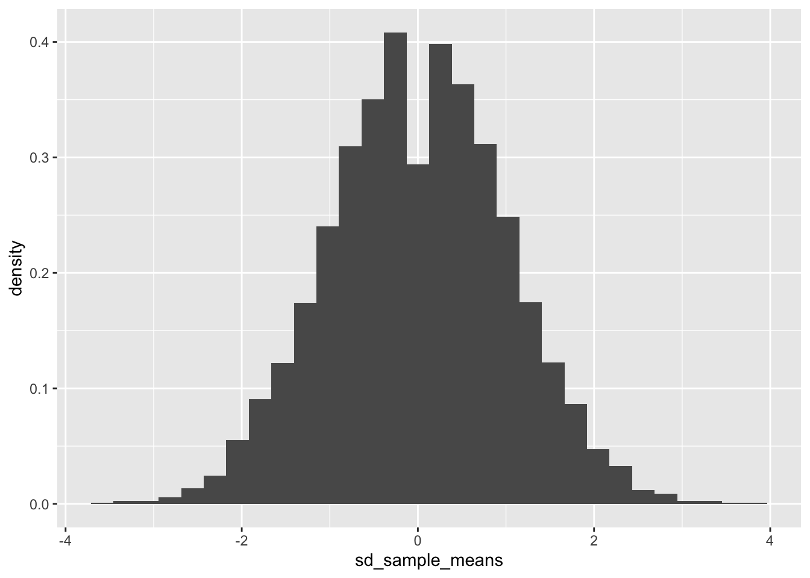

install.packages("tidyverse")Data analysis for social science in tidyverse
このページでは、Llaudet, Elena and Kosuke Imai. 2022. Data Analysis for Social Science: A Friendly and Practical Introduction. Princeton University Press.のコードを現代のRの世界でよく使われているtidyverseパッケージを使ったコードに直すとどのように書くことができるのかを紹介する。これを通じて、tidyverseパッケージに含まれる関数群の初歩的な使い方を学ぶことができるだろう。
コードを実行するためには、tidyverseパッケージをインストールして、読み込む必要がある。パッケージをインストールする際には、次のコマンドを実行する。一度実行してパッケージをインストールしたあとは、再度R/RStudioを開いたとしても、改めて実行する必要はない。
パッケージを使用するためには、R/RStudioを開くたびに、library()コマンドを実行して、パッケージを読み込む必要がある。
library(tidyverse)── Attaching core tidyverse packages ──────────────────────── tidyverse 2.0.0 ──
✔ dplyr 1.1.4 ✔ readr 2.1.5
✔ forcats 1.0.0 ✔ stringr 1.5.1
✔ ggplot2 4.0.1 ✔ tibble 3.2.1
✔ lubridate 1.9.4 ✔ tidyr 1.3.1
✔ purrr 1.0.4
── Conflicts ────────────────────────────────────────── tidyverse_conflicts() ──
✖ dplyr::filter() masks stats::filter()
✖ dplyr::lag() masks stats::lag()
ℹ Use the conflicted package (<http://conflicted.r-lib.org/>) to force all conflicts to become errors以下、各Chapterのコードはすべてlibrary(tidyverse)を実行してあるという前提のもとで進める。
Chapter 1 Introduction
1.7 Loading and making sense of data
1.7.2 Loading the dataset
tidyverseでは、read.csv()と同じ機能を果たすコードとしてread_csv()がある。どちらもほぼ同じだが、read_csv()のほうが気持ち読み込みが早いときがある。
star <- read_csv("STAR.csv")1.7.3 Understanding the data
tidyverseではパイプ演算子（%>%）を使って命令を書くことができる。たとえばデータの中身を確認するView()コマンドであれば、次のように書くことができる。
star %>% View()%>%演算子を改行して書いてもよい。
star %>% # starデータフレームに対して、
View() # viewを実行データの上からいくつかの行を見るhead()コマンドであれば、次のように書くことができる：
star %>% # starデータフレームに対して、
head() # headを実行# A tibble: 6 × 4
classtype reading math graduated
<chr> <dbl> <dbl> <dbl>
1 small 578 610 1
2 regular 612 612 1
3 regular 583 606 1
4 small 661 648 1
5 small 614 636 1
6 regular 610 603 0star %>%
head(n = 3)# A tibble: 3 × 4
classtype reading math graduated
<chr> <dbl> <dbl> <dbl>
1 small 578 610 1
2 regular 612 612 1
3 regular 583 606 1ちなみに、MacであればControl + Shift + mで、WindowsであればCtrl + Shift + mでパイプ演算子を出力することができる。
ちなみに、最近RStudioを新しくインストールした場合だと、上記のショートカットキーを入力すると|>というコマンドが出力されるかもしれない。ふつうに使う分だとどちらを使ってもとくに支障は生じない。試しに以下の2種類を実行して、どちらも同じものが出力されることを確かめてみよう。
star |>
head(n = 3)# A tibble: 3 × 4
classtype reading math graduated
<chr> <dbl> <dbl> <dbl>
1 small 578 610 1
2 regular 612 612 1
3 regular 583 606 1star %>%
head(n = 3)# A tibble: 3 × 4
classtype reading math graduated
<chr> <dbl> <dbl> <dbl>
1 small 578 610 1
2 regular 612 612 1
3 regular 583 606 1Edit→Preferences…（ない場合は、Tools→Global options…）を選択する。以下の画面が開いたら、Codeを選択して、以下の「Use native pipe operator, |> (requires R 4.1+)」のチェックを外すと、上記ショートカットキーを入力したときに%>%が表示されるようになる。どちらでも違いはないが、以下ではたんに麦山がこれに慣れているというだけの理由から、%>%を使うことにする。

dim(star)についても%>%演算子を使って書くことができる。
star %>% # starデータフレームに対して、
dim() # dimを実行[1] 1274 4ここで挙げた例は単純なので、%>%演算子を使うことのありがたみは感じにくいかもしれない。しかし、コードが長くなってきたり、命令が複雑になってくるほど、%>%演算子を使うメリットは大きくなる。Chapter 3あたりから、徐々にそのメリットが明らかになってくる。
1.8 Computing and interpreting means
1.8.2 Means
平均値のように、データフレームに含まれる何らかの変数（列）に対して計算や集計を行う場合には、with()を使う。たとえばstarデータフレームに含まれる変数列の平均値を計算する方法は次のとおり。
star %>%
with(mean(reading))[1] 628.803star %>%
with(mean(graduated))[1] 0.8697017もう一つ別の方法として、summarize()を使う方法がある。たとえばreadingの平均値を求めたいときは次のように書く。
star %>%
summarize(mean(reading))# A tibble: 1 × 1
`mean(reading)`
<dbl>
1 629.summarize()の便利なところは、一度に複数の変数を集計した値を出すことができる点だ。たとえば上記のようにreadingとgraduatedの平均値を計算したい場合には、次のように書けばよい。
star %>%
summarize(mean(reading),
mean(graduated))# A tibble: 1 × 2
`mean(reading)` `mean(graduated)`
<dbl> <dbl>
1 629. 0.870Chapter 2 Randomized experiments
2.5 Do small classes improve student performance?
read_csv()を使ってデータの読み込み。
star <- read_csv("STAR.csv")2.5.2 Creating new variables
tidyverseを使ってなにか新しい変数を作るときのコマンドが、mutate()である。mutate(新しい変数の名前 = その内容)、というコードを書く。
教科書と同じように、starデータフレームに含まれているclasstype列が"small"の場合に1、そうでない場合に0をとる新しい列smallを作って、starデータフレームに追加したい場合には、次のように書く。
star <- star %>%
mutate(small = ifelse(classtype == "small", 1, 0))また、tidyverseを使う場合には、ifelse()と同じような関数としてif_else()がある。文法はほぼ同じで、次のように書くことができる。
star <- star %>%
mutate(small = if_else(classtype == "small", 1, 0))ifelse()を使った場合と結果が同じになっているかを確認しよう。
star %>%
head()# A tibble: 6 × 5
classtype reading math graduated small
<chr> <dbl> <dbl> <dbl> <dbl>
1 small 578 610 1 1
2 regular 612 612 1 0
3 regular 583 606 1 0
4 small 661 648 1 1
5 small 614 636 1 1
6 regular 610 603 0 02.5.3 Subsetting variables
グループごとに集計をしたい場合には、summarize()などの前にgroup_by()をつけることで、グループ別に集計することができる。
star %>% # starデータフレームを、
group_by(small) %>% # smallの値別に分けて、
summarize(mean(reading)) # 平均値を求める# A tibble: 2 × 2
small `mean(reading)`
<dbl> <dbl>
1 0 625.
2 1 633.複数の変数を集計するときにも同様だ。
star %>%
group_by(small) %>%
summarize(mean(reading),
mean(math),
mean(graduated))# A tibble: 2 × 4
small `mean(reading)` `mean(math)` `mean(graduated)`
<dbl> <dbl> <dbl> <dbl>
1 0 625. 629. 0.866
2 1 633. 635. 0.874Chapter 3 Inferring population characteristics via survey research
3.3 Measuring support for Brexit
上記と同様、read_csv()を使ってデータを読み込む。
bes <- read_csv("BES.csv")bes %>%
head()# A tibble: 6 × 4
vote leave education age
<chr> <dbl> <dbl> <dbl>
1 leave 1 3 60
2 leave 1 NA 56
3 stay 0 5 73
4 leave 1 4 64
5 don't know NA 2 68
6 stay 0 4 85bes %>%
dim()[1] 30895 43.3.2 Frequency tables
度数分布表（Frequency table）を作るときには、with(table())コマンドを使う。
bes %>%
with(table(vote))vote
don't know leave stay won't vote
2314 13692 14352 537 3.3.3 Tables of proportions
一度作成したtableにfreq_tableと名前をつけて保存する。保存したデータフレームに対してprop.table()を実行することで、割合を求めることができる。
freq_table <- bes %>%
with(table(vote))
freq_table %>%
prop.table()vote
don't know leave stay won't vote
0.07489885 0.44317851 0.46454119 0.01738145 もしくは、with(table())にそのまま%>%演算子を重ねてprop.table()を実行することでも割合を求めることができる。
bes %>%
with(table(vote)) %>%
prop.table()vote
don't know leave stay won't vote
0.07489885 0.44317851 0.46454119 0.01738145 3.4 Who supported brexit?
3.4.1 Handling missing data
NAを含めた度数分布を出す場合には、教科書に書かれているexclude = NULLのオプションのほか、useNA = "always"のオプションを使うこともできる。
bes %>%
with(table(education, exclude = NULL))education
1 2 3 4 5 <NA>
2045 5781 6272 10676 2696 3425 bes %>%
with(table(education, useNA = "always"))education
1 2 3 4 5 <NA>
2045 5781 6272 10676 2696 3425 平均値を求めるときには、with(mean())を使うか、summarize(mean())を使う。ただし、いずれのコマンドについても値にNAが含まれている場合には計算結果もNAとなってしまう。
bes %>%
with(mean(leave))[1] NAこのような場合には、NAを除いて平均値を求めるように以下のオプションをつける。
bes %>%
with(mean(leave, na.rm = TRUE))[1] 0.4882328bes %>%
summarize(mean(leave, na.rm = TRUE))# A tibble: 1 × 1
`mean(leave, na.rm = TRUE)`
<dbl>
1 0.488データフレームのなかで一つでも欠損値がある行を除外する場合には、na.omit()を使う。
bes1 <- bes %>%
na.omit()ただし、61ページの「ADVANCED TIP」にあるように、実際の調査データの分析では分析に使う変数はごく一部のため、一部の変数のみ抜き出したデータを準備したうえで、na.omit()で欠損値のあるデータを除外することが多い。一部の変数のみを取り出す場合には、select()というコマンドが使える。
bes1 <- bes %>%
select(vote, leave, education, age) %>%
na.omit()3.4.2 Two-way frequency tables
with(table())は2変量の度数分布表（クロス集計表）の作成にも使える。,の前が行になる変数、後ろが列になる変数を表す。
bes1 %>%
with(table(leave, education)) education
leave 1 2 3 4 5
0 498 1763 3014 6081 1898
1 1356 3388 2685 3783 6313.4.3 Two-way tables of proportions
総割合を求める場合には、度数分布表のときと同じくprop.table()を指定すればよい。もしくは、prop.table(margin = 0)と書いても同じ。
bes1 %>%
with(table(leave, education)) %>%
prop.table() education
leave 1 2 3 4 5
0 0.01984301 0.07024744 0.12009404 0.24229988 0.07562657
1 0.05403036 0.13499621 0.10698490 0.15073515 0.02514245行割合を求める場合には、prop.table(margin = 1)。
bes1 %>%
with(table(leave, education)) %>%
prop.table(margin = 1) education
leave 1 2 3 4 5
0 0.03757356 0.13301645 0.22740305 0.45880489 0.14320205
1 0.11449802 0.28607616 0.22671620 0.31942920 0.05328042列割合を求める場合には、prop.table(margin = 2)。
bes1 %>%
with(table(leave, education)) %>%
prop.table(margin = 2) education
leave 1 2 3 4 5
0 0.2686084 0.3422636 0.5288647 0.6164842 0.7504943
1 0.7313916 0.6577364 0.4711353 0.3835158 0.24950573.4.4 Histograms
人生一度はイケてるグラフを作ってみたいと思ったことがあるだろう（そうでもない？）。そんなときに活躍するのが、ggplot()および関連の関数である。ggplot()はデフォルトのRのグラフよりは少し文法が複雑だが、さまざまな要素を追加したり、よりきれいなグラフを作る際には非常に役立つコマンドである。
ggplotについての導入的な知識についてはこのページでも解説しているので、こちらにもとづいて説明する。
まず、教科書と同様に年齢についてのヒストグラムを作ってみたいと思ったとする。以下のコードを実行する。
bes1 %>%
ggplot(aes(x = age)) +
geom_histogram()`stat_bin()` using `bins = 30`. Pick better value `binwidth`.ggplotの基本的な発想は、キャンバスに絵の具を重ね塗りしていくかのように、一つひとつ層を重ねていってグラフを作るというものである。具体的にみてみよう。先ほどのコードから3行目を削除した次の結果を確認してみよう。
bes1 %>%
ggplot(aes(x = age))
ggplot()という部分が、グラフを書くための準備をしている箇所である。aes()のなかでは、x軸やy軸にそれぞれ何の変数を取るのかであったり、どのような色で分けるのか（今回は扱わない）などを指定する。今の場合であれば、x軸にageをとる、ということを指している。上記の命令だけだと、このようにx軸のみが表示された空白の座標が準備される。
geom_histogram()というのが、ヒストグラムを書くためのコードである。先ほどのコードに、+でつないでgeom_histogram()というコードを追加すると、空白の座標にヒストグラムが描かれる。縦軸（count）は、その区間に何人の人が属しているかを示している。
bes1 %>%
ggplot(aes(x = age)) +
geom_histogram()`stat_bin()` using `bins = 30`. Pick better value `binwidth`.
ついで、brexitを支持しなかったグループ（leave == 0）と、brexitを指示したグループ（leave == 1）とに分けたヒストグラムを作る。これは、これまでのコマンドに新たにfacet_wrap(~leave)または、facet_grid(~leave)というコマンドを追加する。
bes1 %>%
ggplot(aes(x = age)) +
geom_histogram() +
facet_wrap(~leave)`stat_bin()` using `bins = 30`. Pick better value `binwidth`.
3.4.5 Density histograms
次は、学歴educationが1のグループと4のグループのみを取り出して、先ほどと同じように2つに分割したヒストグラムを作ってみる。特定の条件にあったデータのみを抽出したいときには、filter()関数を使う。たとえば、educationが1のグループだけを取り出したい場合には、次のようにする。
bes1 %>%
filter(education == 1) %>% # educationが1の人だけを抽出
with(table(education)) # 結果を確認education
1
1854 educationが1または4のグループだけを取り出したい場合には、次のようにする。
bes1 %>%
filter(education == 1 | education == 4) %>% # educationが1または4の人だけを抽出
with(table(education)) # 結果を確認education
1 4
1854 9864 上記の操作を応用して、再びヒストグラムを作ってみよう。
bes1 %>%
filter(education == 1 | education == 4) %>%
ggplot(aes(x = age)) +
geom_histogram() +
facet_wrap(~education)`stat_bin()` using `bins = 30`. Pick better value `binwidth`.
上記のグラフの縦軸を密度にして揃えたいときには、geom_histogram()の括弧内にaes(y = after_stat(density))というオプションを追加する。
bes1 %>%
filter(education == 1 | education == 4) %>%
ggplot(aes(x = age)) +
geom_histogram(aes(y = after_stat(density))) +
facet_wrap(~education)`stat_bin()` using `bins = 30`. Pick better value `binwidth`.同じことをbrexitを支持するかどうかで分けたヒストグラムでもできることを確認しよう。
bes1 %>%
ggplot(aes(x = age)) +
geom_histogram(aes(y = after_stat(density))) +
facet_wrap(~leave)`stat_bin()` using `bins = 30`. Pick better value `binwidth`.3.4.6 Descriptive statistics
2.5.3 Subsetting variablesで扱ったように、group_by()とsummarize()を組み合わせることで、層別に平均値（mean）や中央値（median）、標準偏差（sd）を求めることができる。
bes1 %>%
group_by(leave) %>%
summarize(mean(age))# A tibble: 2 × 2
leave `mean(age)`
<dbl> <dbl>
1 0 46.9
2 1 55.1bes1 %>%
group_by(leave) %>%
summarize(median(age))# A tibble: 2 × 2
leave `median(age)`
<dbl> <dbl>
1 0 48
2 1 58bes1 %>%
group_by(leave) %>%
summarize(sd(age))# A tibble: 2 × 2
leave `sd(age)`
<dbl> <dbl>
1 0 17.3
2 1 15.0分散と標準偏差の関係を確認しておこう。
bes1 %>%
filter(leave == 1) %>%
summarize(分散 = var(age),
標準偏差の2乗 = sd(age)^2,
分散の平方根 = sqrt(var(age)))# A tibble: 1 × 3
分散 標準偏差の2乗 分散の平方根
<dbl> <dbl> <dbl>
1 224. 224. 15.03.5 Relationship between education and the leave vote in the entire UK
これまでと同じようにデータを読み込み。
dis <- read_csv("UK_districts.csv")dis %>%
head()# A tibble: 6 × 3
name leave high_education
<chr> <dbl> <dbl>
1 Birmingham 50.4 23.0
2 Cardiff 40.0 32.3
3 Edinburgh City 25.6 21.9
4 Glasgow City 33.4 25.9
5 Liverpool 41.8 22.4
6 Swansea 51.5 25.8dis %>%
dim()[1] 382 3NAを含む行を削除したデータを作成。
dis1 <- dis %>%
na.omit()dis1 %>%
dim()[1] 380 33.5.1 Scatter plots
散布図を描くときに使うのがgeom_point()というコマンドである。ggplot(aes())内でx軸とy軸をそれぞれ指定しておいて、geom_point()で散布図を描くことができる。
dis1 %>%
ggplot(aes(x = high_education, y = leave)) +
geom_point()上記の図に、xの平均値を表す線とyの平均値を表す線を書き加えてみよう。横方向の線を加えるコマンドはgeom_hline()、縦方向の線を加えるコマンドはgeom_vline()である。
xvalue <- dis1 %>%
with(mean(high_education))
yvalue <- dis1 %>%
with(mean(leave))
dis1 %>%
ggplot(aes(x = high_education, y = leave)) +
geom_point() +
geom_hline(yintercept = yvalue, lty = "dashed") +
geom_vline(xintercept = xvalue, lty = "dashed")3.5.2 Correlation
相関係数を求めるときには、with(cor())コマンドを用いる。
dis1 %>%
with(cor(high_education, leave))[1] -0.7633185dis1 %>%
with(cor(leave, high_education))[1] -0.7633185Chapter 4 Predicting outcomes using linear regression
4.4 Predicting GDP using prior GDP
read_csv()でデータを読み込む。
co <- read_csv("countries.csv")head()で、データの最初の6行を表示できる。
co %>% head()# A tibble: 6 × 5
country gdp prior_gdp light prior_light
<chr> <dbl> <dbl> <dbl> <dbl>
1 USA 11.1 7.37 4.23 4.48
2 Japan 543. 464. 11.9 11.8
3 Germany 2.15 1.79 10.6 9.70
4 China 16.6 4.90 1.45 0.735
5 UK 1.10 0.754 11.9 13.4
6 France 1.58 1.21 8.51 6.91 dim()で、データの行数と列数を表示できる。
co %>% dim()[1] 170 54.4.1 Relationship between GDP and prior GDP
ggplot()を使って散布図を描いてみる。
co %>%
ggplot(aes(x = prior_gdp, y = gdp)) + # x軸にprior_gdp、y軸にgdpを指定
geom_point() # 散布図を描くwith(cor())を使って相関係数を求める。
co %>%
with(cor(gdp, prior_gdp))[1] 0.9903451散布図に回帰直線を書くときには、geom_smooth()を使う。method = "lm"で回帰直線を指定し、se = FALSEで信頼区間を描かないように指定する1。
co %>%
ggplot(aes(x = prior_gdp, y = gdp)) +
geom_point() +
geom_smooth(method = "lm", se = FALSE)`geom_smooth()` using formula = 'y ~ x'4.4.2 With natural logarithm transformations
自然対数変換を行った変数（列）を、データフレーム（co）に追加する。
co <- co %>%
mutate(log_gdp = log(gdp)) %>%
mutate(log_prior_gdp = log(prior_gdp))もともとのgdpの分布は右に歪んでいる（低い方に偏っている）。対数変換を行うことで、分布が左右対称の正規分布に近づくことがわかる。
co %>%
ggplot(aes(x = gdp)) +
geom_histogram()`stat_bin()` using `bins = 30`. Pick better value `binwidth`.co %>%
ggplot(aes(x = log_gdp)) +
geom_histogram()`stat_bin()` using `bins = 30`. Pick better value `binwidth`.1年前のGDPについても同様である。
co %>%
ggplot(aes(x = prior_gdp)) +
geom_histogram()`stat_bin()` using `bins = 30`. Pick better value `binwidth`.co %>%
ggplot(aes(x = log_prior_gdp)) +
geom_histogram()`stat_bin()` using `bins = 30`. Pick better value `binwidth`.
1年前の対数GDPと現在の対数GDPの散布図を描いてみる。
co %>%
ggplot(aes(x = log_prior_gdp, y = log_gdp)) +
geom_point()with(cor())で相関係数を求める。
co %>%
with(cor(log_gdp, log_prior_gdp))[1] 0.99826964.5 Predicting GDP growth using night-time light emissions
\(t\)年のGDP成長率（\(\Delta GDP_t\)とする）は、次のように計算される。
\[ GDP_t = \frac{GDP_{t} - GDP_{t-1}}{GDP_{t-1}} \times 100 \]
GDP成長率、および光量の成長率の変数（列）を作成して、データフレーム（co）に追加する。
co <- co %>%
mutate(gdp_change = (gdp - prior_gdp)/prior_gdp * 100) %>%
mutate(light_change = (light - prior_light)/prior_light * 100)co %>%
ggplot(aes(x = gdp_change)) +
geom_histogram()`stat_bin()` using `bins = 30`. Pick better value `binwidth`.光量の成長率のヒストグラムを描いてみる。
co %>%
ggplot(aes(x = light_change)) +
geom_histogram()`stat_bin()` using `bins = 30`. Pick better value `binwidth`.
ついで、光量の成長率とGDP成長率の散布図を描いてみる。
co %>%
ggplot(aes(x = light_change, y = gdp_change)) +
geom_point()両者の相関係数を計算する。
co %>%
with(cor(gdp_change, light_change))[1] 0.45776724.6 Measuring how well the model fits the data with coefficient of determination, R^2
相関係数を2乗した値を決定係数という。決定係数は、従属変数Yの変動のうち、独立変数Xによって説明される割合を示す。
co %>%
with(cor(gdp, prior_gdp)^2)[1] 0.9807834co %>%
with(cor(log_gdp, log_prior_gdp)^2)[1] 0.9965422co %>%
with(cor(gdp_change, light_change)^2)[1] 0.2095508社会科学の場合は、予測に関心があることは少なく、むしろ、変数間の関連がどの程度あるのかを明らかにすることに主眼がある。そのため、決定係数が高いかどうかはあまり気にする必要はない。
Chapter 5 Estimating causal effects with observational data
5.3 The effect of Russian TV on Ukrainians’ voting behavior
データを読み込む。
uas <- read_csv("UA_survey.csv")uas %>% head()# A tibble: 6 × 3
russian_tv pro_russian_vote within_25km
<dbl> <dbl> <dbl>
1 1 0 1
2 1 1 1
3 0 0 0
4 0 0 1
5 0 0 1
6 1 0 0uas %>% dim()[1] 358 35.3.1 Using the simple linear model to compute the difference-in-means estimator
教科書にかかれているとおり、ロシアのテレビを見ていない地域における親ロシア派の投票率と、ロシアのテレビを見ている地域における親ロシア派の投票率を求めて、それらの差を計算してみる。
mean0 <- uas %>%
filter(russian_tv == 0) %>%
with(mean(pro_russian_vote))
mean1 <- uas %>%
filter(russian_tv == 1) %>%
with(mean(pro_russian_vote))
mean1 - mean0[1] 0.1191139別の方法として、group_by()を使ってサンプルを2つのグループに分けたうえで、それぞれのグループ別に平均値を計算し、両者の差を求めるという方法もある。
uas %>%
group_by(russian_tv) %>%
summarize(mean = mean(pro_russian_vote)) %>%
mutate(diff = mean - lag(mean, n = 1))# A tibble: 2 × 3
russian_tv mean diff
<dbl> <dbl> <dbl>
1 0 0.171 NA
2 1 0.29 0.1195.3.2 Controlling for confounders using a multiple linear regression model
uas %>%
with(cor(within_25km, russian_tv))[1] 0.8127747ロシアとウクライナの国境から25km以内に住んでいるかどうか（within_25km）と、ロシアのテレビを見ているかどうかのクロス表を作ってみよう。
uas %>%
with(table(within_25km, russian_tv)) russian_tv
within_25km 0 1
0 139 14
1 19 1865.4 The effect of russian TV on Ukrainian electoral outcomes
uap <- read_csv("UA_precincts.csv")uap %>% head()# A tibble: 6 × 4
russian_tv pro_russian prior_pro_russian within_25km
<dbl> <dbl> <dbl> <dbl>
1 0 2.72 25.1 1
2 0 0.893 35.3 0
3 1 1.69 20.5 1
4 0 72.3 84.5 1
5 0 1.28 29.0 0
6 1 1.43 45.6 0uap %>% dim()[1] 3589 45.4.1 Using the simple linear model to compute the difference-in-means estimator
今回選挙で親ロシア派の候補者に投票した人の割合（pro_russian）と、前回選挙で親ロシア派の候補者に投票した人の割合（prior_pro_russian）の差の変数を作成して、データフレームuapに追加する。
uap <- uap %>%
mutate(pro_russian_change = pro_russian - prior_pro_russian)今回選挙と前回選挙の差の変数のヒストグラムを見てみよう。
uap %>%
ggplot(aes(x = pro_russian_change)) +
geom_histogram()`stat_bin()` using `bins = 30`. Pick better value `binwidth`.
uap %>%
with(cor(within_25km, russian_tv))[1] 0.5317845Chapter 6 Probability
確率や統計的推測を理解する際には、ブラウン大学の教材であるSeeing Theoryが非常に参考になる。
6.4 Probability distributions
Seeing theoryのChance Eventでは、コインを投げたときに得られる実現値と、観察された割合との関係を見ることができる。コインをたくさん投げるほど、観察された割合の値が真の確率に近づくことがわかる。
6.4.2 The normal distribution
starデータを読み込み、ヒストグラムを作成する。
star <- read_csv("STAR.csv")star %>%
ggplot(aes(x = reading, y = ..density..)) +
geom_histogram()Warning: The dot-dot notation (`..density..`) was deprecated in ggplot2 3.4.0.
ℹ Please use `after_stat(density)` instead.`stat_bin()` using `bins = 30`. Pick better value `binwidth`.Seeing theoryのDiscrete and Continuousの箇所で、「Continuous」を選択して、「Normal」を選択すると、正規分布がどのような形状になるのかを確かめることができる。
6.5.2 The central limit theorem
Seeing theoryのCentral Limit Theoremでは、標本平均の分布がどのようになるのかを確認することができる。
sd_sample_means <- c()
for (i in 1:10000){
## p = 0.6の二値確率変数から1000個の観察の無作為標本を抽出
support_sample <- sample(c(1,0),
size = 1000,
replace = TRUE,
prob = c(0.6, 0.4))
## 標準化した標本平均を計算して保存
sd_sample_means[i] <- (mean(support_sample) - 0.6) / sqrt(0.6 * 0.4 / 1000)
}
## ヒストグラムを作成
sd_sample_means %>%
tibble() %>%
ggplot(aes(x = sd_sample_means, y = ..density..)) +
geom_histogram()`stat_bin()` using `bins = 30`. Pick better value `binwidth`.
Chapter 7 Quantifying uncertainty
7.2 Confidence intervals
7.2.1 Confidence interval for the sample mean
Seeing theoryのconfidence intervalの箇所では、次のことを理解できる。
- x%信頼区間とは、無作為に抽出されたx%の標本が、母集団におけるパラメータ（この場合は平均値）の真値を含んでいる。
- 標本サイズを大きくするほど、信頼区間が小さくなる。
- 信頼水準を高く設定するほど、信頼区間が大きくなる。
besデータを読み込み、欠損値を削除したデータbes1を準備する。
bes <- read_csv("BES.csv") bes1 <- bes %>%
na.omit()公式の意味を知りたい場合には教科書のようなコードを実行するほうがよいが、実際に信頼区間を計算する際にはt.test()関数を使うのが便利である。t.test()は、t分布を使って信頼区間を求めたりt検定を行ったりする関数である。標本サイズが十分大きい場合、t分布は標準正規分布に近似するため、教科書で使われている標準正規分布の信頼区間を求める場合とほぼ同様に使うことができる。
標本平均の信頼区間を求める場合、次のように書く。
t.test(平均を計算したい変数 ~ 1, data = データフレーム, conf.level = 信頼水準)
t.test(leave ~ 1, data = bes1, conf.level = 0.95) # 標本平均の95%信頼区間を求める
One Sample t-test
data: leave
t = 149.75, df = 25096, p-value < 2.2e-16
alternative hypothesis: true mean is not equal to 0
95 percent confidence interval:
0.4657125 0.4780657
sample estimates:
mean of x
0.4718891 末尾に示された「95 percent confidence interval:」の箇所が標本平均の95%信頼区間を表している。
7.2.2 Confidence interval for the difference-in-means estimator
starデータを読み込む。
star <- read_csv("star.csv")star %>% head()# A tibble: 6 × 5
classtype reading math graduated small
<chr> <dbl> <dbl> <dbl> <dbl>
1 small 578 610 1 1
2 regular 612 612 1 0
3 regular 583 606 1 0
4 small 661 648 1 1
5 small 614 636 1 1
6 regular 610 603 0 0t.test()は2つのグループ間の平均の差推定量の信頼区間を求める場合にも使うことができる。この場合、次のように書く。
t.test(平均を計算したい変数 ~ グループ分けする変数, data = データフレーム, conf.level = 信頼水準)
t.test(reading ~ small, data = star, conf.level = 0.95) #small別に見た数学の平均値の差の95%信頼区間を求める)
Welch Two Sample t-test
data: reading by small
t = -3.4957, df = 1221, p-value = 0.0004899
alternative hypothesis: true difference in means between group 0 and group 1 is not equal to 0
95 percent confidence interval:
-11.257410 -3.163683
sample estimates:
mean in group 0 mean in group 1
625.4920 632.7026 末尾に示された「95 percent confidence interval:」の箇所が平均の差推定量の95%信頼区間を表している。
教科書と異なり、少人数学級ではないグループの平均値から少人数学級のグループの平均値を引いている（t.test()はsmallの値が小さい方から大きい方を引く）ことから、値が負になっている。しかし、解釈に変わりはない。
7.2.3 Confidence interval for predicted outcomes
coデータを読み込み、必要な変数を作成する。
co <- read_csv("countries.csv")co <- co %>%
mutate(gdp_change = (gdp - prior_gdp)/prior_gdp * 100) %>%
mutate(light_change = (light - prior_light)/prior_light * 100)以下の線形モデルを推定して、fitに格納する。
fit <- lm(gdp_change ~ light_change, data = co)predict()関数を使って、light_changeが20の場合のgdp_changeの予測値と95%信頼区間を求める。
fit %>%
predict(newdata = data.frame(light_change = 20),
interval = "confidence") fit lwr upr
1 54.91233 48.77123 61.05343なお、ggplot()を使うことで、すべてのlight_changeの値における95%信頼区間を求めた図を書くこともできる。
co %>%
ggplot(aes(x = light_change, y = gdp_change)) +
geom_point() +
geom_smooth(method = "lm", se = TRUE) # 線形モデルを当てはめ、95%信頼区間を表示`geom_smooth()` using formula = 'y ~ x'
薄い灰色で塗られた箇所が、95%信頼区間を表している。
7.3 Hypothesis testing
7.3.1 Hypothesis testint with the difference-in-means estimator
先ほどと同じように、t.test()を使って平均の差推定量が統計的に有意に0と異なるかどうかの検定を行うことができる。
t.test(reading ~ small, data = star) # small別に見た数学の平均値の差に関するt検定
Welch Two Sample t-test
data: reading by small
t = -3.4957, df = 1221, p-value = 0.0004899
alternative hypothesis: true difference in means between group 0 and group 1 is not equal to 0
95 percent confidence interval:
-11.257410 -3.163683
sample estimates:
mean in group 0 mean in group 1
625.4920 632.7026 冒頭に示された「t = 」の箇所が検定統計量であるt統計量（標本サイズが十分大きい場合、z統計量とt統計量の値は近似する）の値、「p-value」の箇所がp値を表している。tの絶対値は1.96より大きく、またp値は0.05よりも小さいため、少人数学級とそれ以外のクラスの平均値には統計的に有意な差がある（少人数学級のほうが読解力の点数が高い）と結論できる。
7.3.2 Hypothesis testing with estimated regression coefficients
UA_surveyデータを読み込み、uasに格納する。
uas <- read_csv("UA_survey.csv")以下の線形モデルを推定して、fitに格納する。
fit <- lm(pro_russian_vote ~ russian_tv + within_25km, data = uas)モデルの統計量を示す表を表示する。
fit %>%
summary() %>%
coef Estimate Std. Error t value Pr(>|t|)
(Intercept) 0.1959065 0.03457823 5.665602 3.032123e-08
russian_tv 0.2875934 0.07652437 3.758194 2.000236e-04
within_25km -0.2080644 0.07681051 -2.708802 7.079846e-03Footnotes
se = TRUEとすると、95%信頼区間が表示される。信頼区間についての説明は、Chapter 7を参照のこと。↩︎